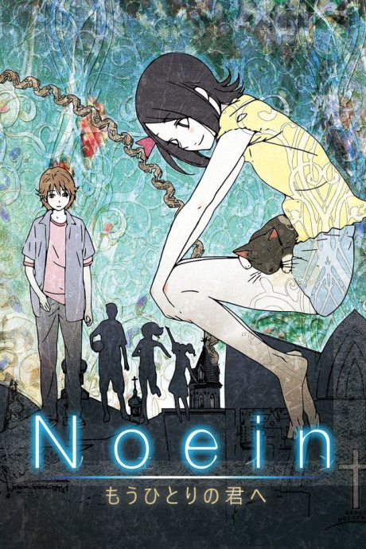
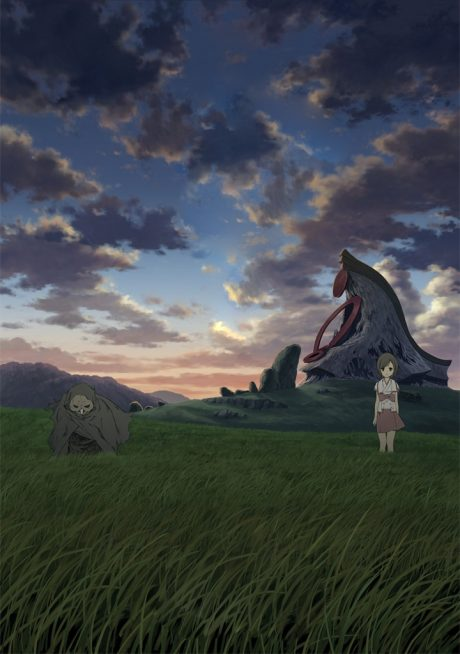

Noein: To Your Other Self
ノエイン もうひとりの君へ
Haruka, a girl in a seaside town, is caught in a war between two dimensions, each of which believes she is the key to its future.
An original anime, so there's no book to continue with.
7.1AniList score
—Animeter, no votes yet
24episodes
Rate it or report where you stopped
Is it worth pushing through?
Built from what visitors report across all 24 episodes.
Loading reports…Checking what other people said about this one.
Sign in above with your email to add your report.
More like Noein: To Your Other Self

Original8.0 Manga Film8.1
Manga Film8.1
 Film8.6
Film8.6
 Original8.4
Original8.4
 Film8.2
Film8.2
 Film8.1
Film8.1
 Film7.7
Film7.7
 Film8.1
Film8.1
 Manga Ch. 298.3
Manga Ch. 298.3
 VN7.3
VN7.3
 Original7.8
Original7.8
 Done8.5
Done8.5